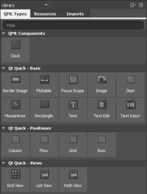
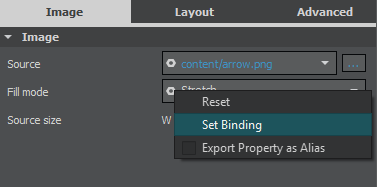
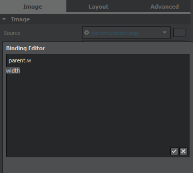
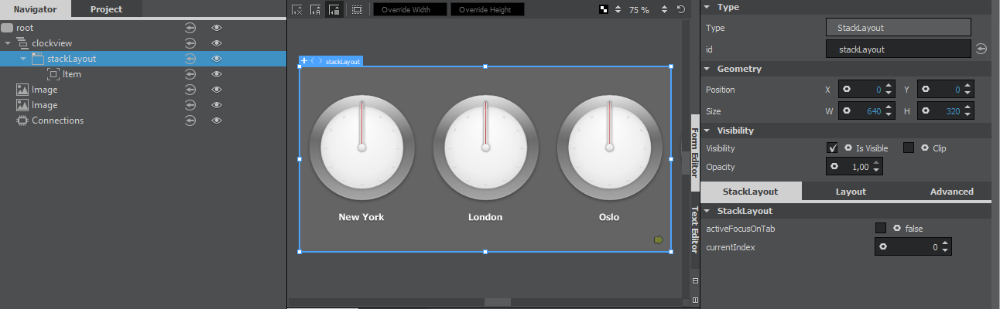
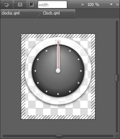

Creating Components
A component provides a way of defining a new visual item that you can re-use in other QML files. A component is like a black box; it interacts with the outside world through properties, signals, and slots, and is generally defined in its own QML file. You can import components to applications.
The Library pane lists the available QML types, UI components, resources, and imports.

The QML Types tab displays the QML types grouped by category: your own QML components, basic types, layouts, positioner types, and views.
Sets of UI components with the look and feel of a particular mobile device platform have been defined for Qt Quick 1. Since Qt 5.1, ready-made Qt Quick Controls, Dialogs, and Layouts are available for creating user interfaces using Qt Quick 2. The components and controls are based on standard QML types. To view the components and controls in the Library, import the component sets in Imports.
The Qt Quick Application wizards for a particular platform add the import statements automatically. You can remove import statements in Imports
Resources displays the images and other files that you copy to the project folder (to the same subfolder as the QML files).
Adding Components to Designs

- Drag and drop components from the Library (2) to the Navigator (3) or Form Editor (1).
- Select components in the Navigator to edit their properties in the Properties pane (4). For more information, see Specifying Item Properties.
- Connect components to signals or create bindings between components in the Connections pane (5). For more information, see Adding Connections.
- Add states to apply sets of changes to the properties of one or several components in the States pane (6). For more information, see Adding States.
Using Basic QML Types
You can use the following QML types to create components:
- Animated Image provides a way to play animations stored as images containing a series of frames, such as those stored in GIF files.
- Border Image uses an image as a border or background.
- Image adds a bitmap to the scene. You can stretch and tile images.
- Item is the most basic of all visual types in QML. Even though it has no visual appearance, it defines all the properties that are common across visual types, such as the x and y position, width and height, anchoring, and key handling.
- Rectangle adds a rectangle that is painted with a solid fill color and an optional border. You can use the radius property to create rounded rectangles.
- Text adds formatted read-only text.
- Text Edit adds a single line of editable formatted text that can be validated.
- Text Input adds a single line of editable plain text that can be validated.
Using Data Models
You can create the following types of views to organize items provided by data models:
- Grid View provides a grid vizualization of a model.
- List View provides a list vizualization of a model.
- Path View visualizes the contents of a model along a path. For more information, see Editing PathView Properties.
- Scroll View provides scrolling for user-defined content. It can be used instead of a Flickable item.
- Stack View provides a stack-based navigation model.
- Swipe View enables users to navigate pages by swiping sideways.
When you add a Grid View, List View, or Path View, the ListModel and the delegate component that creates an instance for each item in the model are added automatically. You can edit item properties in the Properties pane or in the Text Editor. You can also replace the default model and delegate with other, more complex models and delegates in the Text Editor. Item Delegate and Swipe Delegate delegate components are also available in the Library.
Positioning Items in UIs
The position of an item in the UI can be either absolute or relative to other items. If you are designing a static UI, manual positioning provides the most efficient form of positioning items. For a dynamic UI, you can employ the following positioning methods provided by Qt Quick:
Setting Bindings
Property binding is a declarative way of specifying the value of a property. Binding allows a property value to be expressed as a JavaScript expression that defines the value relative to other property values or data accessible in the application. The property value is automatically kept up to date if the other properties or data values change.
Property bindings are created implicitly in QML whenever a property is assigned a JavaScript expression. To set JavaScript expressions as values of properties in the Design mode, select the Settings menu next to a property, and then select Set Binding.

The Binding Editor supports code completion. Start typing a string and press Ctrl+Space to display a list of properties, IDs, and code snippets. When you enter a period (.) after a property name, a list of available values is displayed. Press Enter to accept the first suggestion in the list and to complete the code.

To remove bindings, select Reset in the context menu.
You can set bindings also in the Connections view. For more information, see Adding Bindings Between Properties.
For more information on the JavaScript environment provided by QML, see Integrating QML and JavaScript.
Bindings are a black box for the Design mode and using them might have a negative impact on performance, so consider setting anchors and margins for items, instead. For example, instead of setting parent.width for an item, you could anchor the item to its sibling items on the left and the right.
Setting Anchors and Margins
In an anchor-based layout, each QML type can be thought of as having a set of invisible anchor lines: top, bottom, left, right, fill, horizontal center, vertical center, and baseline.
In the Layout pane you can set anchors and margins for items. To set the anchors of an item, click the anchor buttons. You can combine the top/bottom, left/right, and horizontal/vertical anchors to anchor items in the corners of the parent item or center them horizontally or vertically within the parent item.

For convenience, you can click the  (Fill to Parent) toolbar button to apply fill anchors to an item and the (Reset Anchors) button to reset the anchors to their saved state.
(Fill to Parent) toolbar button to apply fill anchors to an item and the (Reset Anchors) button to reset the anchors to their saved state.
You can specify the baseline anchor in the Text Editor in the Design mode.
For performance reasons, you can only anchor an item to its siblings and direct parent. By default, an item is anchored to its parent when you use the anchor buttons. Select a sibling of the item in the Target field to anchor to it, instead.
Arbitrary anchoring is not supported. For example, you cannot specify: anchor.left: parent.right. You have to specify: anchor.left: parent.left. When you use the anchor buttons, anchors to the parent item are always specified to the same side. However, anchors to sibling items are specified to the opposite side: anchor.left: sibling.right. This allows you to keep sibling items together.
In the following image, Rectangle 2 is anchored to Rectangle 1 on its left and to the bottom of its parent.

The anchors for Rectangle 2 are specified as follows in code:
Rectangle { id: rectangle2 anchors.left: rectangle1.right anchors.leftMargin: 15 anchors.bottom: parent.bottom anchors.bottomMargin: 15 // }
Margins specify the amount of empty space to leave to the outside of an item. Margins only have meaning for anchors. They do not take any effect when using layouts or absolute positioning.
Using Positioners
Positioner items are container items that manage the positions of items in a declarative user interface. Positioners behave in a similar way to the layout managers used with standard Qt widgets, except that they are also containers in their own right.
You can use the following positioners to arrange items in UIs:
- Column arranges its child items vertically.
- Row arranges its child items horizontally.
- Grid arranges its child items so that they are aligned in a grid and are not overlapping.
- Flow arranges its child items side by side, wrapping as necessary.
To position several items in a Column, Row, Grid, or Flow, select the items on the canvas, and then select Position in the context menu.
Using Layouts
Since Qt 5.1, you can use QML types in the Qt Quick Layouts module to arrange Qt Quick items in UIs. Unlike positioners, they manage both the positions and sizes of items in a declarative interface. They are well suited for resizable UIs.
You can use the following layout types to arrange items in UIs:
- Layout provides attached properties for items pushed onto a column, row, or grid layout.
- Column Layout provides a grid layout with only one column.
- Row Layout provides a grid layout with only one row.
- Grid Layout provides a way of dynamically arranging items in a grid.
- Stack Layout provides a stack of items where only one item is visible at a time.
To lay out several items in a column, row, grid, or Stack Layout, select the items in the Form Editor, and then select Layout in the context menu.
You can also click the (Column Layout), (Row Layout), and  (Grid Layout) toolbar buttons to apply layouts to the selected items.
(Grid Layout) toolbar buttons to apply layouts to the selected items.
To make an item within a layout as wide as possible while respecting the given constraints, select the item on the canvas and then select Layout > Fill Width in the context menu. To make the item as high as possible, select Fill Height.
Editing Stack Layouts

To add items to a Stack Layout, select the  button next to the type name in the Form Editor. To move between items, select the
button next to the type name in the Form Editor. To move between items, select the  (Previous) and
(Previous) and  (Next) buttons.
(Next) buttons.
To add a tab bar to a stack layout, select Stacked Container > Add Tab Bar.
To raise or lower the stacking order of an item, select Stacked Container > Increase Index or Decrease Index.
Organizing Items
Since Qt 5.7, you can use the following Qt Quick Controls types to organize items in UIs:
- Frame places a logical group of controls within a visual frame.
- Group Box is used to lay out a logical group of controls together, within a titled visual frame.
- Label is a text label with inherited styling and font.
- Page provides a styled page control with support for a header and footer.
- Page Indicator indicates the currently active page.
- Pane provides a background matching with the application style and theme.
Adding User Interaction Methods
You can use the following QML types to add basic interaction methods to UIs:
- Flickable items can be flicked horizontally or vertically.
- Focus Scope assists in keyboard focus handling when building reusable QML components.
- Mouse Area enables simple mouse handling.
Since Qt 5.7, you can also use the following Qt Quick Controls types to inform users about the progress of the application or to gather input from the user:
- Busy Indicator indicates activity while content is being loaded.
- Button provides a push button that you can associate with an action.
- Check Box provides an option button that can be toggled on (checked) or off (unchecked).
- Check Delegate presents an item delegate that can be toggled on (checked) or off (unchecked).
- Combo Box is a combined button and popup list that is populated by using a data model.
- Delay Button provides an option button that is triggered when held down long enough.
- Dial is a circular dial that is rotated to set a value.
- Progress Bar indicates the progress of an operation.
- Radio Button provides an option button that can be switched on (checked) or off (unchecked).
- Radio Delegate presents an item delegate that can be toggled on (checked) or off (unchecked).
- Range Slider enables users to select a range of values by sliding two handles along a track.
- Round Button provides a push button with rounded corners that you can associate with an action.
- Slider selects a value by sliding a handle along a track.
- Spin Box enables the user to specify a value by clicking the up or down buttons, by pressing up or down on the keyboard, or by entering a value in the box.
- Switch is an option button that can be toggled on or off.
- Switch Delegate presents an item delegate with a switch indicator that can be toggled on or off.
- Tab Bar enables users to switch between different views or subtasks.
- Tab Button is a button that is functionally similar to Button, but provides a look that is more suitable for a Tab Bar.
- Text Area displays multiple lines of editable formatted text.
- Text Field displays a single line of editable plain text.
- Tool Bar is a container of application-wide and context sensitive actions and controls, such as navigation buttons and search fields.
- Tool Button is a button that is functionally similar to Button, but provides a look that is more suitable for a Tool Bar.
- Tool Separator separates a group of items from adjacent items on a Tool Bar.
- Tumbler is a spinnable wheel of items that can be selected.
You can also use the Dialog type in the Qt Quick Dialogs module to wrap arbitrary content into a dialog window including a row of platform-tailored buttons.
History of Qt Quick Controls
In Qt 4, ready-made Qt Quick 1 Components were provided for creating UIs with a native look and feel for a particular target platform. In Qt 5.1, Qt Quick Controls, Dialogs, and Layouts were added for creating classic desktop-style user interfaces using Qt Quick 2.1. The Qt Quick Controls Styles could be used to customize Qt Quick Controls.
Since Qt 5.7, Qt Quick Controls 2 replace Qt Quick Controls 1 and Qt Labs Controls. They provide lightweight QML types for creating performant user interfaces for devices.
Qt Quick Controls 2 achieve improved efficiency by employing a simplified styling architecture when compared to Qt Quick Controls, on which the module is based. The visual editor reads the qtquickcontrols2.conf file that specifies the preferred style and some style-specific arguments. To change the style, select another style from the list on the toolbar. This enables you to check how your UI looks when using the available styles.
For an example of defining your own style and using it in the Design mode, see Qt Quick Controls 2 - Flat Style.
Qt Quick Controls 2 work in conjunction with Qt Quick and Qt Quick Layouts.
The Qt Creator project wizards create Qt Quick applications that use Qt Quick 2 types or Qt Quick Controls 2 types.
Even if you use Qt Quick Controls 2, you can still write cross-platform applications, by using different sets of QML files for each platform.
Some ready-made controls, such as a gauge, dial, status indicator, and tumbler, are provided by the Qt Quick Extras module.
Creating Components in Design Mode
- Select File > New File or Project > Qt > QML File (Qt Quick 2) > Choose to create a new .qml file.
Note: Components are listed in the QML Components section of the Library only if the filename begins with a capital letter.
- Click Design to open the .qml file in the Design mode.
- Drag and drop a QML type from the Library to the Navigator or Form Editor.
- Edit its properties in the Properties pane.
The available properties depend on the QML type.
The following sections contain examples of how to create some common components:
Moving Within Components
Components can consist of several other components. To view the component hierarchy as a bread crumb path when you edit a component on the canvas, select Go into Component or press F2. Click the component names in the path to navigate to them. You can easily navigate back to the top level when you are done editing the component.
